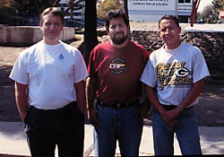

In search of Matalote Boca Grande, Ictiobus labiosus,
in the Río Pánuco basin, Mexico (February 1999)
|  | Beginning the search at Universidad Autónoma de Querétaro (UAQ) with trip sponsors Dr. John Lyons (far left), Dr. Raúl Pineda López (UAQ), and Norman Mercado Silva (UNAM) |
| Church in small town of Conca. We visited a fish farm in this town to look for a young fisherman whom we were told had experience catching adult matalote, fishing at night with a cast net in the Río Santa María. We could not locate the fisherman. |
| John Lyons and Norman Mercado on shore of Río Santa María above canyon area where several young-of-year matalote were collected. |
| One of several young-of-year specimens of Ictiobus labiosus seined from the Río Santa María. |
| Dr. John Lyons standing at base of large cypress tree along a tributary of the Río Verde. Cypress trees were seen here and along the Río Jalpan (Río Santa María) where young-of-year specimens of Ictiobus labiosus were collected. |

|
Hank Bart at Los Otates falls area near Tamasopo, Río Verde system, San Luís Potosí. |
| Xiphophorus montezumae from Los Otates falls area near Tamasopo, San Luís Potosí. |
| Norman Mercado in Ciudad Valles, San Luís Potosí. We checked fish markets here looking for "boquin"(buffalo). Only fish seen were "bagre" (catfish) and "mojarra" (probably tilapia). Apparently, buffalo are not taken from the Río Pánuco in large enough numbers to be sold commercially. |
Return to Field Work